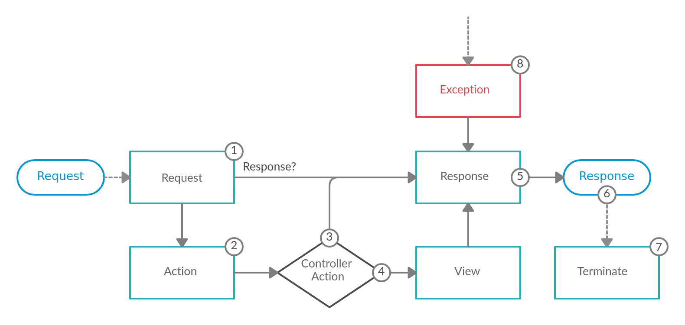

Components
This section will focus on how each component is integrated into Athena, as well an overview of the overall design of Athena.
At a high level Athena's job is to interpret a request and create the appropriate response based on your application logic. Conceptually this could be broken down into three steps:
- Consume the request
- Apply application logic to determine what the response should be
- Return the response
Steps 1 and 3 are handled via Crystal's HTTP::Server, while step 2 is where Athena fits in.
Powered By Events#
Athena is an event based framework, meaning it emits various events via the Event Dispatcher component during the life-cycle of a request. These events are listened on internally in order to handle each request; custom listeners on these events can also be registered. The flow of a request, and the related events that are dispatched, is depicted below in a visual format:

1. Request Event#
The very first event that is dispatched is the ART::Events::Request event and can have a variety of listeners. The primary purpose of this event is to create an ART::Response directly, or to add information to the requests' attributes; a simple key/value store tied to request instance accessible via ART::Request#attributes.
In some cases the listener may have enough information to return an ART::Response immediately. An example of this would be the ART::Listeners::CORS listener. If enabled it is able to return a CORS preflight response even before routing is invoked.
Warning
If an ART::Response is returned at this stage, the flow of the request skips directly to the response event. Future Request event listeners will not be invoked either.
Another use case for this event is populating additional data into the request's attributes; such as the locale or format of the request.
Request event in Athena
This is the event that ART::Listeners::Routing listens on to determine which ART::Controller/ART::Action pair should handle the request.
See ART::Controller for more details on routing.
2. Action Event#
The next event to be dispatched is the ART::Events::Action event, assuming a response was not already returned within the request event. This event is dispatched after the related controller/action pair is determined, but before it is executed. This event is intended to be used when a listener requires information from the related ART::Action; such as reading custom annotations off of it via the Config component.
Action event in Athena
This is the event that ART::Listeners::ParamConverter and ART::Listeners::ParamFetcher listen on to apply custom conversion logic via an ART::ParamConverterInterface, or resolve request parameters such as ARTA::QueryParams.
3. Invoke the Controller Action#
This next step is not an event, but a important concept within Athena nonetheless; executing the controller action related to the current request.
Argument Resolution#
Before Athena can call the controller action, it first needs to determine what arguments, if any, should be passed to it. This is achieved via an ART::Arguments::ArgumentResolverInterface that facilitates gathering all the arguments. One or more ART::Arguments::Resolvers::ArgumentValueResolverInterface will then be used to resolve each specific argument's value.
The default algorithm is as follows:
- Check the request's attributes for a key that matches the name of the argument; such as as a path param or something set via a listener (either built-in or custom)
- Check if the type of the argument is ART::Request, if so use the current request object
- Check if the argument has a default value, or use
nilif it is nilable - Raise an exception if an argument's value could be not resolved
Custom ArgumentValueResolverInterfaces may be created & registered to extend this functionality.
Todo
An additional event could possibly be added after the arguments have been resolved, but before invoking the controller action.
Execute the Controller Action#
The job of a controller action is to apply business/application logic to build a response for the related request; such as an HTML page, a JSON string, or anything else. How/what exactly this should be is up to the developer creating the application.
Handle the Response#
The type of the value returned from the controller action determines what happens next. If the value is an ART::Response, then it is used as is, skipping directly to the response event. However, if the value is NOT an ART::Response, then the view is dispatched (since Athena needs an ART::Response in order to have something to send back to the client).
4. View Event#
The ART::Events::View event is only dispatched when the controller action does NOT return an ART::Response. The purpose of this event is to turn the controller action's return value into an ART::Response.
An ART::View may be used to customize the response, e.g. setting a custom response status and/or adding additional headers; while keeping the controller action response data intact.
This event is intended to be used as a "View" layer; allowing scalar values/objects to be returned while listeners convert that value to the expected format (e.g. JSON, HTML, etc.). See the negotiation component for more information on this feature.
View event in Athena
By default Athena will JSON serialize any non ART::Response values.
5. Response Event#
The end goal of Athena is to return an ART::Response back to the client; which might be created within the request event, returned from the related controller action, or set within the view event. Regardless of how the response was created, the ART::Events::Response event is dispatched directly after.
The intended use case for this event is to allow for modifying the response object in some manner. Common examples include: add/edit headers, add cookies, change/compress the response body.
6. Return the Response#
The raw HTTP::Server::Response object is never directly exposed. The reasoning for this is to allow listeners to mutate the response before it is returned as mentioned in the response event section. If the raw response object was exposed, whenever any data is written to it it'll immediately be sent to the client and the status/headers will be locked; as mentioned in the Crystal API docs:
The response
#statusand#headersmust be configured before writing the response body. Once response output is written, changing the#statusand#headersproperties has no effect.
Each ART::Response has a ART::Response::Writer instance that determines how the response should be written to the raw response's IO. By default it is written directly, but can be customized via the response, such as for compression.
7. Terminate Event#
The final event to be dispatched is the ART::Events::Terminate event. This is event is dispatched after the response has been sent to the user.
The intended use case for this event is to perform some "heavy" action after the user has received the response; as to not affect the response time of the request. E.x. queuing up emails or logs to be sent/written after a successful request.
8. Exception Handling#
If an exception is raised at anytime while a request is being handled, the ART::Events::Exception is dispatched. The purpose of this event is to convert the exception into an ART::Response. This is globally handled via an ART::ErrorRendererInterface, with the default being to JSON serialize the exception.
It is also possible to handle specific error states differently by registering multiple exception listeners to handle each case. An example of this could be to invoke some special logic only if the exception is of a specific type.
See the error handling section in the getting started docs for more details on how error handling works in Athena.
Orchestrated via Dependency Injection#
All of the components have been designed with Dependency Injection (DI) in mind; even if it's not a requirement when using a component on its own. Athena itself makes heavy use of DI as the means to orchestrate all the dependencies that do/may exist in an application.
DI is used to allow for easier testing, allowing for better reusability, and sharing state between types. See the Dependency Injection component for more details on how to use it within Athena.